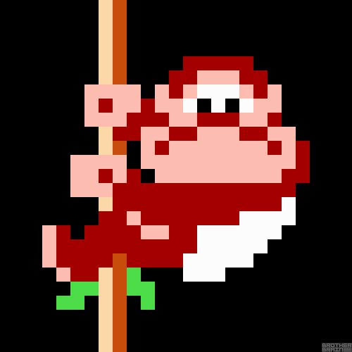

Retro Review: Donkey Kong
When we curate a Memories Corner for classic games, we usually focus on that warm, fuzzy feeling of nostalgia and celebrate the golden age of our childhoods. However, sometimes we have to put on our honest reviewer glasses and admit that certain legendary titles simply haven't survived the cruel test of time. 8-bit Donkey Kong might be one of the most important foundational blocks in gaming history—after all, it introduced the world to Mario (then known as Jumpman) and our iconic giant ape. But actually sitting down to play it today feels less like a joyful trip down memory lane and more like a grueling test of patience.
The game's biggest and most unforgivable sin is just how incredibly clunky the core mechanics feel. The moment you grab the controller, moving your character feels like trying to steer a man with his boots set in concrete. The jumping mechanic is notoriously rigid; once you press the jump button, you have absolutely zero mid-air control. If you didn't calculate your trajectory down to the pixel before leaving the ground, you are entirely at the mercy of fate. Furthermore, the fall damage logic is brutally unforgiving. Dropping from a height just a fraction taller than your character results in an instant loss of life, leading to a constant stream of "cheap" deaths while awkwardly navigating ladders and platforms.
The 8-bit home console ports—particularly the ubiquitous NES version—make the situation even worse. The original arcade cabinet only featured four distinct stages to begin with, but the home release completely excised the famous "Cement Factory" (50m) level under the excuse of memory limitations. This makes an already shallow, repetitive loop feel even more hollow. While leaping over or smashing rolling barrels with a hammer is mildly amusing for the first few minutes, the frustration caused by wonky hitboxes and stiff controls quickly overshadows any genuine fun. Ultimately, I have endless respect for 8-bit Donkey Kong as a historical artifact. It is the priceless museum piece that practically saved Nintendo and introduced Shigeru Miyamoto's genius to the globe. However, if you evaluate it strictly as a playable game today, it promises much more frustration than entertainment. We can respectfully place it on the shelf for its monumental legacy, but when it comes to actually playing it, I'd much rather just listen to that iconic start-up jingle and move on to something else.